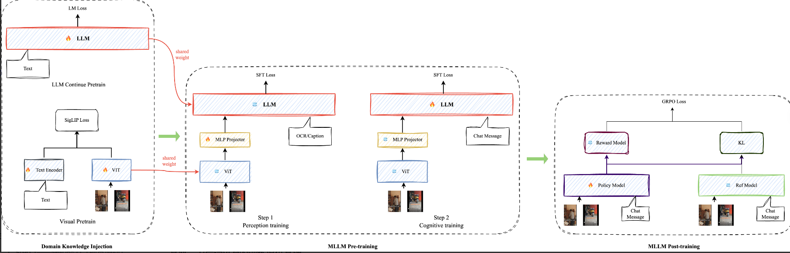

内容审核需要的不只是一个类别。系统还需要将图像、文字或视频中的证据与规则联系起来，给出可供核对的拒绝理由。不同业务分别维护小模型时，规则更新、模型迭代和跨模态协作也容易形成重复工作。
这篇文章整理风控多模态大模型的整体训练方案。架构分为领域知识注入、MLLM 预训练和 MLLM 后训练，同时配合一个负责候选理由召回的 Copilot。文中的阶段安排与数据量属于原始方案记录，不将规划等同于已经完成的实验。
整体链路与分工
领域知识注入
├─ 视觉编码器的领域预训练
└─ 语言模型继续训练
↓
MLLM 预训练
├─ 感知：图像内容、文字与细节
└─ 认知：问答、规则理解与多模态关联
↓
MLLM 后训练
└─ 面向审核任务的判断、输出格式与奖励设计
输入图像 → Copilot 召回 Top-K 理由 → 人工或大模型核对候选

图：原始笔记中的训练架构示意。
视觉编码器有两个下游用途：作为多模态大模型的视觉入口，以及为图搜文 Copilot 提供图像 embedding。因此，视觉预训练既要关注图像理解，也要关注与文本理由的语义对齐。
领域知识注入
视觉侧：对比学习与分阶段解冻
视觉预训练采用 CLIP 式图文对比学习，将图像和文本映射到可比较的表征空间。相比只使用固定类别监督，这种训练目标更直接地对应后续的图搜文检索任务。
原方案的三个阶段分别为：
- 使用开源图文对进行 LiT 式对齐，冻结视觉侧、训练语言侧。
- 解冻 ViT，进一步对齐视觉与语言表征。
- 加入业务数据，学习图文匹配与同类拒绝理由之间的业务语义关系，并规划额外的细粒度或自监督目标。
笔记中用 hard label 表示原始配对关系，也讨论了对同一拒绝理由给予 soft label 的方案。例如 0.8 是方案中的相似度目标示例，不是一个通用推荐值。
语言侧：继续训练
语言侧基于 Qwen 系列模型，在通用语料与审核相关文本上继续训练。目的在于补充审核规则、业务用语和场景知识，同时保留通用语言能力。
| 数据类型 | 原始方案记录 |
|---|---|
| 开源图文 | LAION 中文子集与 Wukong，合计约 130M；早期版本计划先使用 20M |
| 业务图文 | 需求约 20M；当时记录约 1.8M 封面、0.5M 已生成 Caption |
| 通用语言数据 | 计划从 SkyPile 采样约 50B token |
| 业务文本 | 视频 ASR、广告语等，方案记录约 200B token |
上述数字反映不同阶段的需求、收集进度或训练计划，不能直接相加当作最终训练数据量。后续扩到更大规模的内容同样属于资源允许时的规划。
为什么需要领域适配
审核结论依赖平台规则、上下文与证据。通用模型可能认识某个物体，却未必知道特定场景中需要核对哪条规则；单个词语也不能脱离语境直接视为风险标签。
领域数据的价值是将可见证据、场景说明与判断标准连接起来。数据质量检查还需要区分真实规则、标注噪声和模型生成的补充描述。
MLLM 预训练：先感知，再任务理解
感知阶段
第一步关注图像、文字和局部细节。原方案使用通用与业务 Caption、OCR 数据，并将主要训练参数集中在 ViT 和 Merger。
通用来源包括 Infinity-MM 的 Caption 与 OCR 数据；业务侧通过模型生成描述及 OCR 服务构造监督。笔记中的数量分别包含已有数据与预计生产量，实际训练应以最终去重、质检后的样本清单为准。
认知阶段
第二步引入 VQA、推理、多图、视频与纯文本数据。训练安排分为三个递进阶段：先混合通用与业务问答，再加入推理数据，最后增加多图与视频上下文。
这样的划分便于定位问题：如果模型读错文字，应优先检查感知数据与视觉分辨率；如果它看到了证据却匹配错规则，则需要检查任务数据、规则说明与判断监督。
感知与认知是这里组织训练的工作划分，不意味着模型内部存在两个完全独立的模块，也不能仅凭阶段命名证明训练更稳定。收益仍需通过分阶段评估和消融实验确认。
为什么方案采用 Qwen2.5-VL
方案关注动态分辨率、视频时间信息和视觉编码器中的窗口注意力。它们分别关系到细节保留、时序理解和计算成本。
Qwen2.5-VL 的官方说明介绍了动态分辨率、动态帧率采样、时间对齐的多模态位置编码，以及窗口注意力与全局注意力配合的视觉编码器。参见 Qwen2.5-VL 技术介绍。
这里的选择是针对方案需求，不将不同模型家族概括为绝对优劣。比较 BLIP-2、LLaVA 或其他模型时，还需固定具体版本、输入分辨率、视频长度和推理预算。
动态分辨率也不等于完全不缩放或无损输入。实际预处理仍有尺寸对齐和像素预算；其价值在于更灵活地分配视觉 token，减少不必要的细节损失。
后训练：面向审核任务设计奖励
原方案计划采用 GRPO 进行后训练，先聚焦特定场景，再扩展到更广的风险域。奖励设计围绕风险召回、类别匹配与输出格式展开，Policy Model 为多模态模型。
这一阶段需要明确模型究竟在优化什么。格式正确不代表判断正确，匹配到类别也不代表给出的依据真实存在。评估时应分别检查规则命中、证据一致性、误判和漏判，而不能只看一个汇总奖励。
本文将这部分保留为方案设计，不声称已完成所有场景的强化学习训练或上线验证。
Copilot：先缩小候选，再做判断
Copilot 是图搜文召回模块。它把输入图像编码为向量，在拒绝理由向量库中检索 Top-K 候选。后续审核员或大模型在候选中核对，而不是一次面对全部理由。
图像 → 图像编码器 → 向量检索 → Top-K 候选理由
↓
人工或多模态模型核对
↓
正确理由与错误候选形成反馈数据
在人工辅助阶段，审核员可以选择正确理由；候选缺失时，补充新的正确理由。确认后的正例与错误但相似的候选，能够形成下一轮训练的正负样本。
这一闭环把部分“填写理由”的工作变成“核对候选”。是否扩大自动化范围仍要根据业务评估决定；高召回率本身不等于最终判断已经可靠。
召回、排序与指标
在候选集中判断的系统，正确理由必须先进入候选集。因而 Copilot 的重要指标之一是 Hit@K：有多少查询在前 K 个结果中至少命中一个正确理由。
原方案还讨论将重排序教师的能力蒸馏到检索模型中，以减少单独重排序带来的在线成本。这需要明确教师的输入、分数尺度和监督目标，具体工程问题见另一篇文章：视觉预训练与 Copilot 工程笔记。
方案复盘
整体方案将领域适配、视觉理解、任务判断和候选召回分开组织，但它们最终需要在同一条业务链路中验证。训练数据、检索索引和审核规则的版本应当对应，才能解释一次规则更新或模型升级带来的变化。
本文根据《风控大模型 副本》整理，保留方案结构，合并重复段落。原稿中的计划数据量、训练规划与已经完成的工作在文中分别表述；未经原始实验记录支持的跨模型性能比较不作为结论。